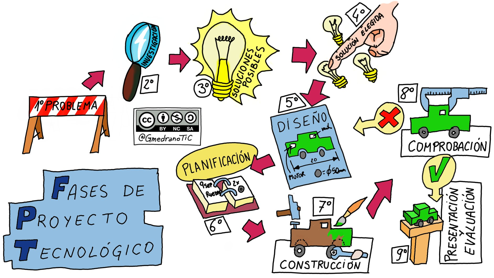

Revisamos las Fases del Proceso Tecnológico

Imagen descargada desde la página https://makinandovelez.wordpress.com/2022/02/28/fases-del-proceso-tecnologico/
¿Recuerdas esta imagen? Pues ya estamos en el paso 6 (Planificación). Es el momento de poner todo en orden y organizarse para que pronto, muy pronto, podamos empezar el tan ansiado paso de la construcción de nuestro Superproyecto. Así que ponte las pilas y vamos a ello!